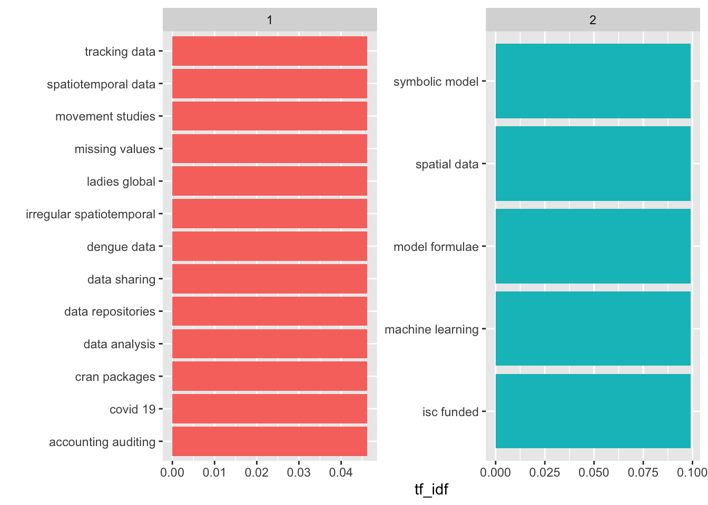
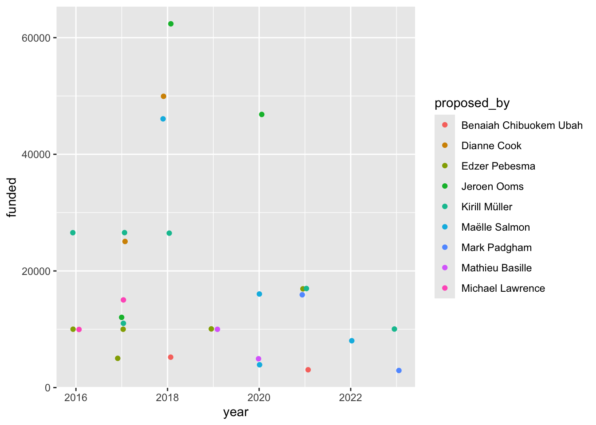
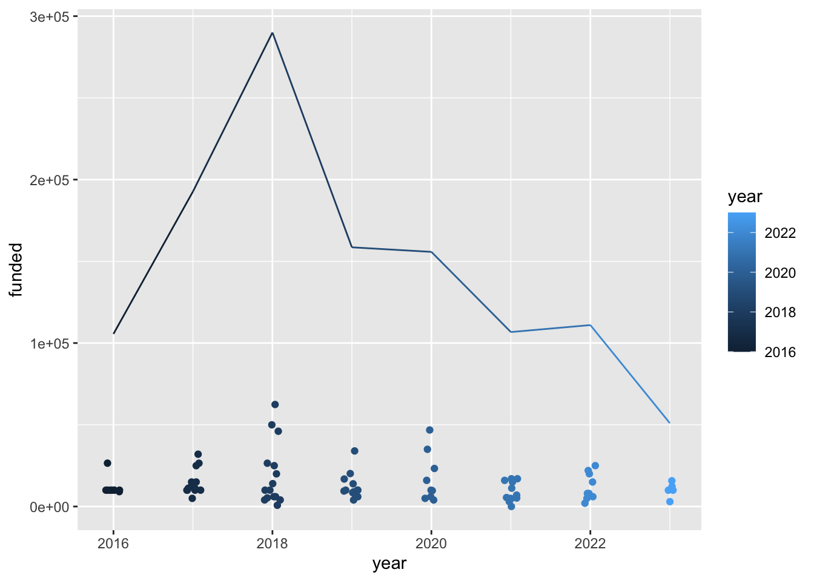

library(tidyverse) # ggplot, lubridate, dplyr, stringr, readr...
library(tidytext)
library(praise)Grants from the R Consortium Infrastructure Steering Committee (ISC) Grant Program
The Data
The R Consortium Infrastructure Steering Committee (ISC) Grant Program will accept proposals again between March 1 and April 1, 2024 (and then again in the fall).
This initiative is a cornerstone of our commitment to bolstering and enhancing the R Ecosystem. We fund projects contributing to the R community’s technical and social infrastructures.
Learn more in their blog post announcing this round of grants.
The R Consortium ISC has been awarding grants since 2016. This week’s data is an exploration of past grant recipients.
isc_grants <- readr::read_csv('https://raw.githubusercontent.com/rfordatascience/tidytuesday/master/data/2024/2024-02-20/isc_grants.csv') |>
mutate(index = row_number())n-grams
bigrams <- isc_grants |>
unnest_tokens(bigram, summary, token = "ngrams", n = 2) |>
filter(!is.na(bigram))
bigrams |>
count(bigram, sort = TRUE)# A tibble: 7,363 × 2
bigram n
<chr> <int>
1 of the 57
2 the r 47
3 this project 41
4 in the 32
5 in r 29
6 of r 28
7 will be 26
8 aims to 24
9 project will 23
10 r packages 23
# ℹ 7,353 more rowsbigram_isc <- bigrams |>
group_by(group) |>
separate(bigram, c("word1", "word2"), sep = " ") |>
filter(!word1 %in% stop_words$word) |>
filter(!word2 %in% stop_words$word) |>
count(word1, word2, sort = TRUE) |>
filter(n > 3) |>
unite(bigram, word1, word2, sep = " ")bigram_isc# A tibble: 22 × 3
# Groups: group [2]
group bigram n
<dbl> <chr> <int>
1 1 data science 10
2 1 project aims 10
3 2 project aims 9
4 1 covid 19 5
5 1 data sharing 5
6 1 missing values 5
7 1 spatiotemporal data 5
8 2 data science 5
9 2 machine learning 5
10 2 model formulae 5
# ℹ 12 more rowstf_idf <- bigram_isc |>
count(group, bigram) |>
bind_tf_idf(bigram, group, n) |>
arrange(desc(tf_idf))
tf_idf# A tibble: 22 × 6
# Groups: group [2]
group bigram n tf idf tf_idf
<dbl> <chr> <int> <dbl> <dbl> <dbl>
1 2 isc funded 1 0.143 0.693 0.0990
2 2 machine learning 1 0.143 0.693 0.0990
3 2 model formulae 1 0.143 0.693 0.0990
4 2 spatial data 1 0.143 0.693 0.0990
5 2 symbolic model 1 0.143 0.693 0.0990
6 1 accounting auditing 1 0.0667 0.693 0.0462
7 1 covid 19 1 0.0667 0.693 0.0462
8 1 cran packages 1 0.0667 0.693 0.0462
9 1 data analysis 1 0.0667 0.693 0.0462
10 1 data repositories 1 0.0667 0.693 0.0462
# ℹ 12 more rowstf_idf |>
arrange(desc(tf_idf)) |>
group_by(group) |>
slice_max(tf_idf, n = 5) |>
ungroup() |>
mutate(bigram = reorder(bigram, tf_idf)) |>
ggplot(aes(x = tf_idf, y = bigram, fill = as.factor(group))) +
geom_col(show.legend = FALSE) +
facet_wrap(~group, ncol = 2, scales = "free") +
ylab("")
Are there places (typos?) where words are repeated?
bigrams |>
separate(bigram, c("word1", "word2"), sep = " ") |>
filter(word1 == word2)# A tibble: 12 × 9
year group title funded proposed_by website index word1 word2
<dbl> <dbl> <chr> <dbl> <chr> <chr> <int> <chr> <chr>
1 2022 1 Femr: Finite Elemen… 20000 Laura Sang… <NA> 12 pdes pdes
2 2022 1 Dengue Data Hub 2000 Thiyanga T… <NA> 14 deng… deng…
3 2019 2 RcppDeepState, a si… 34000 Toby Hocki… https:… 40 c c
4 2019 2 RcppDeepState, a si… 34000 Toby Hocki… https:… 40 c c
5 2019 2 RcppDeepState, a si… 34000 Toby Hocki… https:… 40 c c
6 2019 2 RcppDeepState, a si… 34000 Toby Hocki… https:… 40 c c
7 2019 1 R-global: analysing… 10000 Edzer Pebe… http:/… 47 the the
8 2018 2 Next-generation tex… 25000 Claus Wilke https:… 53 grid grid
9 2018 2 serveRless 10000 Christoph … https:… 56 a a
10 2018 1 Ongoing infrastruct… 62400 Jeroen Ooms https:… 60 c c
11 2017 1 An infrastructure f… 12000 Jeroen Ooms <NA> 69 c c
12 2016 2 R Documentation Tas… 10000 Andrew Redd https:… 78 the the isc_grants |>
group_by(proposed_by) |>
mutate(n_proposal = n()) |>
filter(n_proposal > 1) |>
ggplot(aes(x = year, y = funded, color = proposed_by)) +
geom_jitter(width = 0.1)
isc_grants |>
group_by(year) |>
mutate(total = sum(funded)) |>
ggplot(aes(x = year, y = funded, color = year)) +
geom_jitter(width = 0.1) +
geom_line(aes(y = total))
praise()[1] "You are extraordinary!"